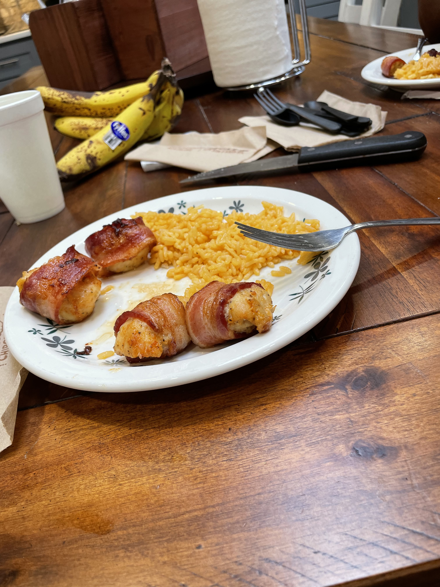

Bacon Wrapped Chicken Bites

Description
These easy to make Bacon Wrapped Chicken Bites take 10 minutes to prep and 20 minutes to cook. With just a few simple ingredients you will be on your way to some full bellies
All you need is Chicken, Bacon, little oil, and your choice of spices.
Ingredients
- Chicken Breasts
- Bacon
- Olive Oil
- Garlic Powder
- Salt
- Pepper
- Smoked Paprika
- Grated Parmesan
Steps
- wash & pat dry chicken breasts
- cut up chicken into bite size pieces (about 1" x 1" cubes)
- add chicken to bowl with oil, spices and cheese
- massage spices and cheese into chicken making sure they are well coated
- cut bacon strips in half
- wrap chicken cube with bacon strip
- preheat airfyer to 370 at this step (YES, run the airfyer with nothing in it!)
- place on baking sheet
- cook at 370 for 20 minutes--flipping at the halfway point
HomePage